<footer>
    <div class="container flex-row-reverse flex-items-center flex-justify-between py-4 d-sm-flex">
        <ul class="list-style-none">
            <li class="footer-link">
                <a routerLink="/">
                    
                    <span class="sr-only">Facebook</span>
                </a>
            </li>
            <li class="footer-link">
                <a routerLink="/">
                    
                    <span class="sr-only">GitHub</span>
                </a>
            </li>
            <li class="footer-link">
                <a routerLink="/">
                    
                    <span class="sr-only">LinkedIn</span>
                </a>
            </li>
        </ul>
        <ul class="list-style-none flex-wrap">
            <li class="footer-link">
                <a class="footer-text" routerLink="/about">© 2023 Global Donation Initiative</a>
            </li>
            <li class="footer-link">
                <a class="footer-text" routerLink="/about">About us</a>
            </li>
        </ul>
    </div>
</footer>
